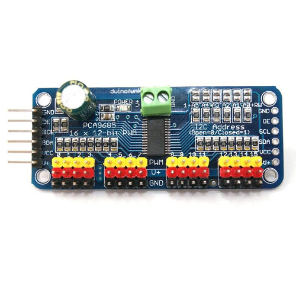

03 프로그램 영역 제한 확인링커에서 프로그램 영역을 384KiB로 제한했습니다. 이 빌드의 사용량은 72,272B로, 확보한 프로그램 영역의 18.38%입니다.02 데이터 저장 영역 선택Sector 7의 마지막 128KiB를 티칭·설정 저장용으로 확보하고, 프로그램이 이 영역에 배치되지 않도록 분리했습니다.STMicroelectronics RM0383 · Table 4 ↗
05 / Flutter / 앱 개발
하나의 앱에서 주행·로봇팔·티칭 기능 조작
요구사항
이동체 주행과 로봇팔 조작, 티칭 기능을 하나의 모바일 앱에서 사용할 수 있어야 했습니다.
판단·구현
Flutter로 조작 화면을 개발하고, 사용자의 입력을 모드별 Bluetooth 명령 패킷으로 변환해 STM32에 전달하도록 연결했습니다.
구현 결과
차량 조작과 티칭·시퀀스 화면을 구현했습니다. 앱 화면과 하단의 실기체 시연에서 조작 흐름과 실제 동작을 확인할 수 있습니다.
Flutter 제어 앱
차량 조작 화면티칭·시퀀스 화면
06 / Bluetooth / 통신 설계
주행·로봇팔·티칭 명령을 16바이트 패킷으로 통합
요구사항
주행, 로봇팔, 티칭과 설정 명령은 필요한 데이터가 달라, 앱과 STM32가 공통으로 해석할 수 있는 통신 형식이 필요했습니다.
판단·구현
시작 바이트·Mode·12바이트 Payload·Checksum·종료 바이트로 구성한 16바이트 패킷을 설계했습니다. 전체 길이는 고정하고 Payload의 의미를 모드별로 구분했습니다.
구현 결과
하나의 프레임 형식으로 차량 주행·비상정지, 6채널 로봇팔, 12개 티칭 시퀀스와 설정 명령을 구분해 전달하도록 구성했습니다.
Bluetooth 패킷 구조고정 길이 16 bytes · 모드별 Payload 해석
[0]0xAA시작 · 1 byte
[1]Mode모드 · 1 byte
[2]–[13]Data Payload데이터 · 12 bytes
[14]Checksum검사 · 1 byte
[15]0x55종료 · 1 byte
Mode 0
차량 주행 · E-STOP · PID
Mode 1
6채널 로봇팔 · 속도 · Transaction ID
Mode 2
12개 티칭 시퀀스 · 조회 · 재생 · 저장
Mode 3
PID 계수 · 서보 3점 보정 · 설정 저장
07 / I2C / 서보 제어
PCA9685로 6채널 서보의 PWM 출력 제어
요구사항
로봇팔의 여러 서보를 같은 주기로 동작시키면서 각 관절의 목표 위치를 개별적으로 제어해야 했습니다.
판단·구현
STM32에서 목표 각도를 서보 펄스폭과 12비트 카운트 값으로 변환하고, I2C로 PCA9685의 채널별 레지스터에 기록했습니다. PCA9685가 50Hz PWM 신호를 출력하도록 구성했습니다.
구현 결과
STM32의 타이머 채널 사용을 줄이면서 6개 서보의 펄스폭을 개별 설정했습니다. 로봇팔의 목표 위치 처리와 하드웨어 PWM 출력 코드도 분리했습니다.
서보 제어 구조
STM32목표 각도 → 카운트 계산I2C →

PCA96856채널 · 12비트 PWM 출력PWM →
서보 모터채널별 목표 위치로 이동
어깨 관절 50° 명령의 변환 예시
목표 각도50°
펄스폭1,056 µs
12비트 카운트216
I2C 기록채널 2
20ms 주기에서 1,056µs를 12비트 카운트로 환산하면 약 216입니다. 채널 레지스터에 기록한 값으로 PCA9685가 PWM을 출력합니다.